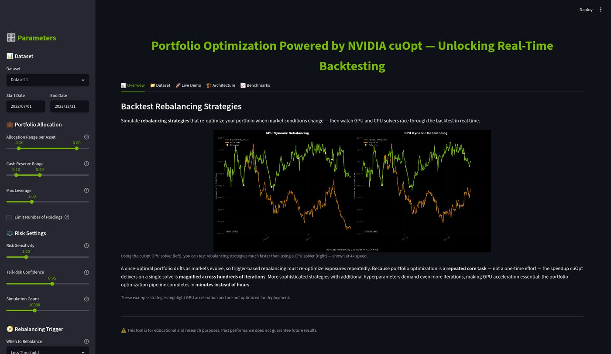

Robust allocation, fast enough to iterate
Mean-CVaR optimisation asks a harder question than traditional mean-variance: on the worst 5% of days, how much do we actually lose? Answering it honestly means simulating tens of thousands of futures — which is slow enough on CPU that quantitative teams quietly stop asking.
You have capital to allocate across hundreds of assets. Two goals pull against each other: earn more, and don't get destroyed when markets turn. CVaR — Conditional Value at Risk — measures the average loss on the worst days, and optimising against it means the portfolio is chosen with the tail in mind rather than the average.
The cost is computational. Each scenario becomes a constraint, so a realistic problem turns into a linear program with tens of thousands of variables.
It is not that a single solve is slow. It is that you never solve once. Markets move, so a portfolio that was optimal in January drifts by March. Backtesting a dynamic rebalancing strategy means running hundreds of solves across rolling historical windows.
An overnight batch job becomes a 40-minute interactive session — which is the difference between blindly trusting one allocation rule and testing twenty variations before market open.
GPU and CPU reach effectively identical optima — CVaR 0.004299 vs 0.004272, return 0.001385 vs 0.001383. That equivalence matters more than raw speedup: a chief risk officer's first question is whether the fast GPU answer is mathematically identical to the verified CPU reference.

A rebalancing backtest running side by side — the cuOpt solver on the left, the CPU solver on the right, racing through the same strategy. Allocation limits, cash reserve, leverage cap, tail-risk confidence and rebalancing trigger are all adjustable live in the browser.
You run one strategy overnight and live with the result. Nobody explores a second rebalancing rule, because the answer arrives tomorrow.
You test the loss-threshold trigger, the drift trigger and buy-and-hold before lunch, and choose between them on empirical evidence.
What exactly is Conditional Value at Risk?
Value at Risk (VaR) answers "how bad is the 5th-percentile day?" — a single point on the curve. Conditional VaR (CVaR) answers "on all the days worse than that, what do I lose on average?" — the full mass of the tail, not its edge.
That distinction matters because two portfolios can share an identical VaR while one has a far heavier tail behind it (prone to catastrophic black-swan wipes). Optimising against CVaR protects against the losses that actually destroy funds.
The cost is that it needs scenarios — tens of thousands of simulated futures — and each one becomes a constraint in the optimisation. That is where NVIDIA GB10 compute shines.
Scenario generation via GPU KDE is not faster than scikit-learn at demo scale — we measured 0.50 s versus 0.42 s. The 18× is in the Mean-CVaR solve. And below roughly 500 assets the GPU loses outright to launch overhead: this only makes sense at institutional scale, which is also the scale where it matters.